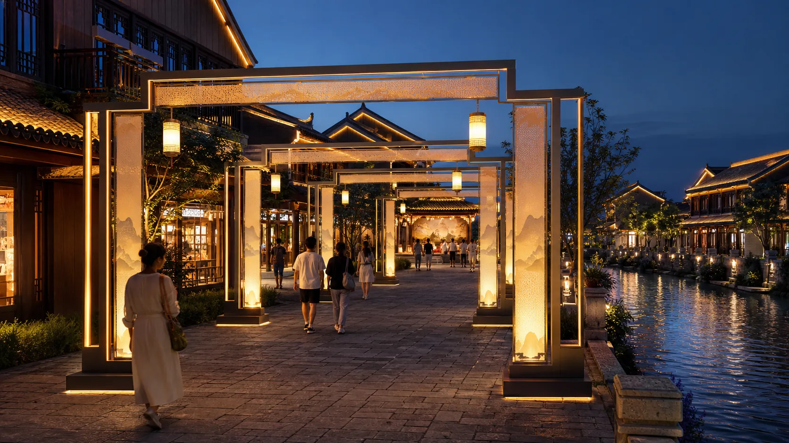
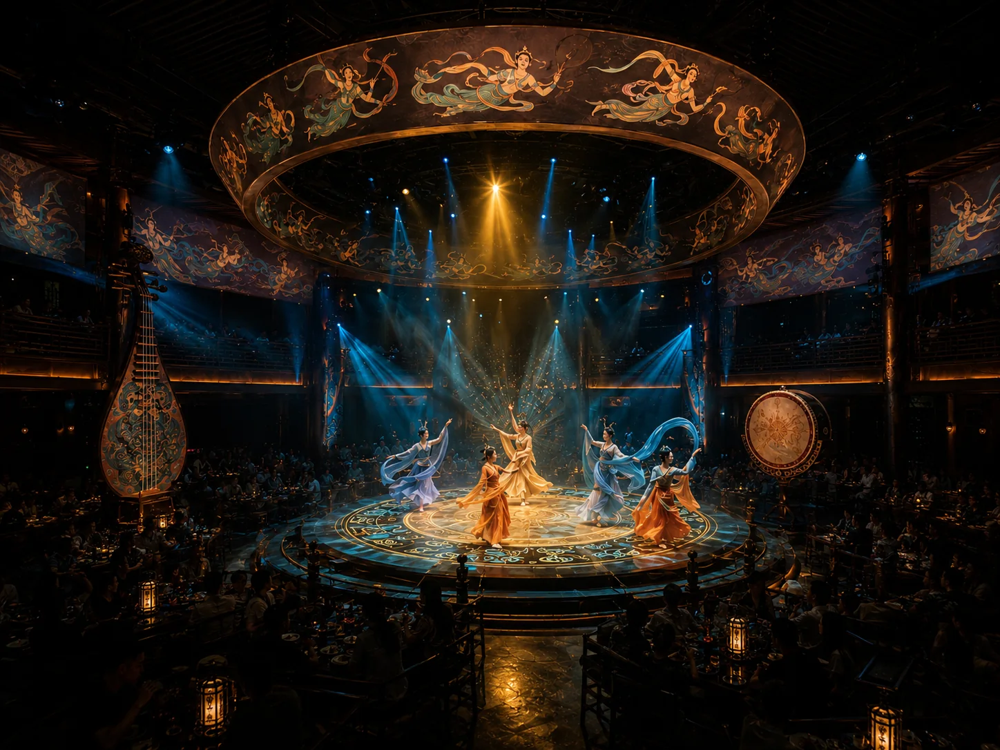
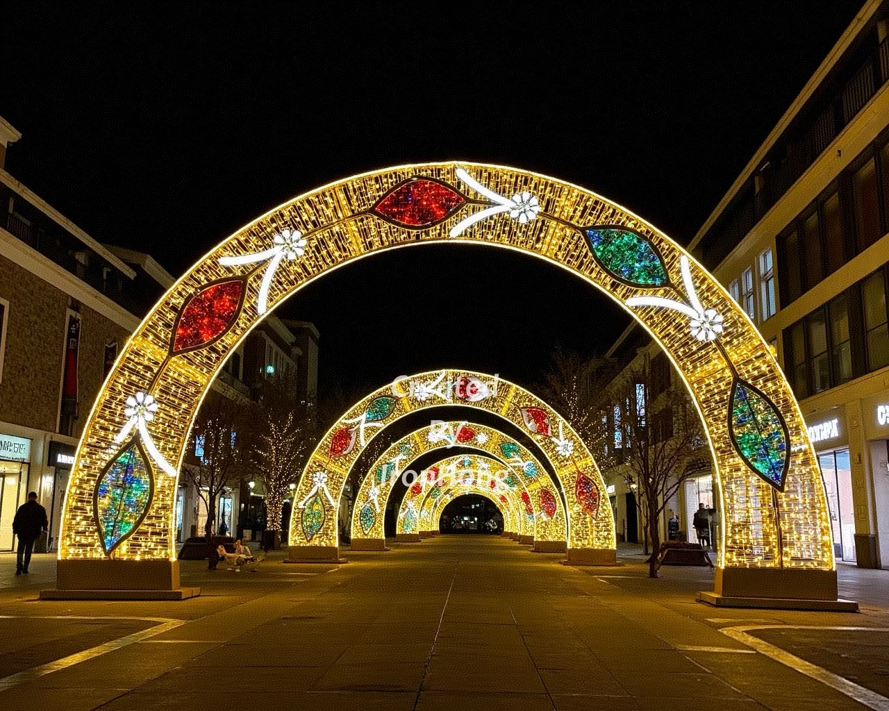
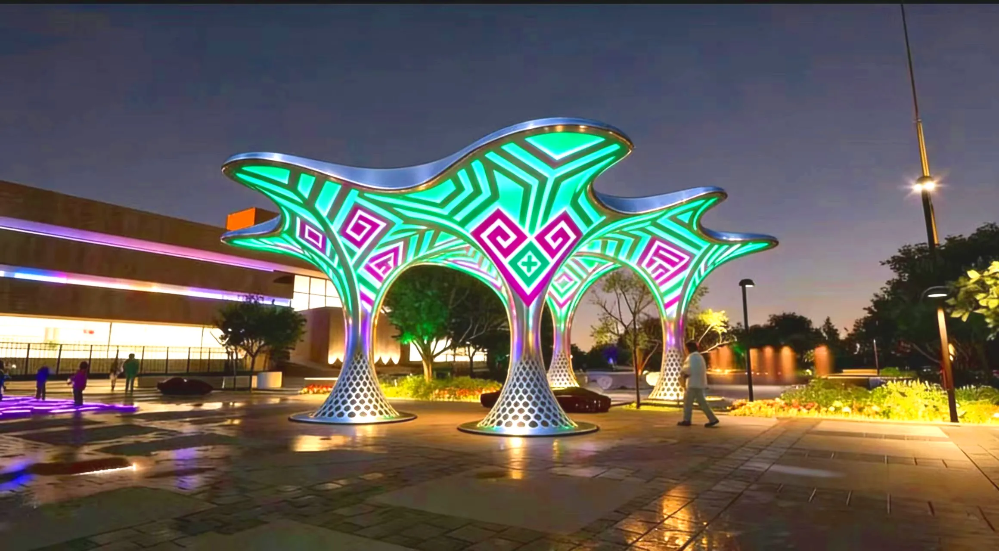
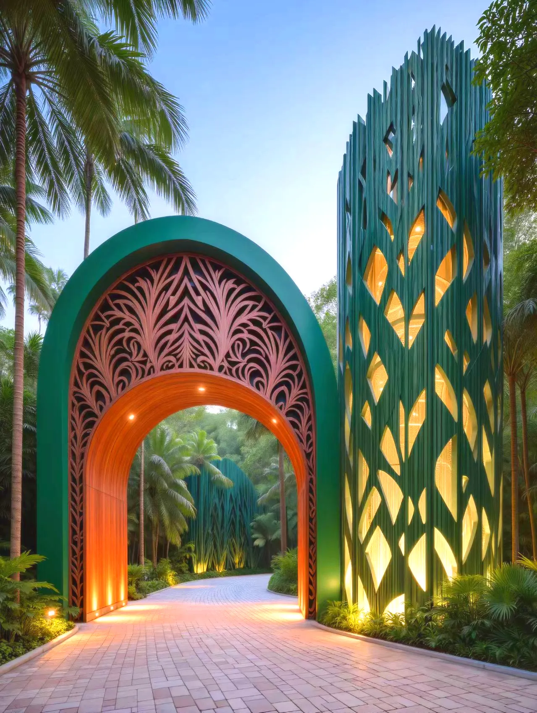

人从哪里来，在哪里停。
先确认入口、主视线、排队空间、消防净空和可利用的供电点，再判断需要一个地标，还是一条连续动线。
从入口地标、主拍照点到夜游动线，我们把灯光、结构、控制与维护一起设计，让一个夜间场景真正能够建成并持续运行。

设计从场地条件开始。
夜游项目从客流、视线和停留开始。灯光装置只是其中一个节点；真正影响体验的，还有排队、拍照、供电、检修、节目切换和长期维护。
艺术装置建立记忆点，舞美装置承载演出，宫宴餐秀组织夜间消费，城市更新连接公共空间与长期运营。

宫宴餐秀不是一张舞台效果图。它需要同时解决文化主题、席位视线、上菜节奏、演员出入口、灯光节目、拍照传播和开业后的内容更新。

先确认入口、主视线、排队空间、消防净空和可利用的供电点，再判断需要一个地标，还是一条连续动线。
从地方文化、建筑尺度和运营节奏提炼视觉母题，不用一套通用灯海覆盖所有项目。
结构、防水、控制回路、检修口、运输吊装和节目切换在设计阶段同步确定，减少现场返工。
不同场地需要不同的交付边界。以下为方案方向参考，不代表已完成项目或固定报价。

先核查水深、岸电、锚泊、强风和观演方向，再确定水上装置、岸线补光与节目控制。

兼顾远距离识别、近距离拍照、步行净空和节庆换装，减少只在效果图里成立的造型。

围绕车行视线、门厅尺度、雨棚高度和品牌色温，建立夜间识别和迎宾氛围。
正式方案根据现场条件确认材料、结构、供电、控制、防护、安装和质保边界，不用未经复核的参数代替工程判断。
核对尺寸、重量、风荷载、地面条件、运输分段和吊装路径。
分开常态、节庆和检修模式，提前规划回路、控制位置与应急切换。
根据室内外环境确认防护等级、排水、散热、检修口和备件边界。
通常包括节点策划、造型与灯光设计、结构计算、制造、灯具与控制、供电布线、运输安装、节目调试和运维交付。正式范围以合同和书面技术文件为准，结构、电气和防护条件需按现场复核。 详细说明
按节点估算比按灯具数量更可靠：先确定入口识别点、主拍照点和连接段的数量与尺度，再结合使用周期（临时、季节或长期）、供电条件和安装环境逐项估算。没有现场资料时给出的固定总价通常不可靠。 详细说明
户外长期装置不能只看灯具防护等级，还要同步设计接插件与控制箱的防护、排水和散热、防雷浪涌、结构防腐与抗风，以及日常检修通道和备件。 详细说明
周期取决于审批、设计深化、制造和现场施工窗口。异形结构、大尺度装置和需要文物或消防审批的项目周期更长；景区不停业施工通常只能夜间作业。确认图纸、尺寸和材料后才能给出可靠排期。 详细说明
场地位置、白天和夜间的现状照片或视频、平面图与关键尺寸、游客动线、可用供电条件、预算区间、目标开放日期、使用周期和运营方式。资料越完整，初步方案越接近可落地的版本。 详细说明
总部和工厂位于广东江门，承接全国景区、古镇、商业街区、酒店与城市公共空间项目；海外项目请通过英文站联系国际项目团队。 详细说明